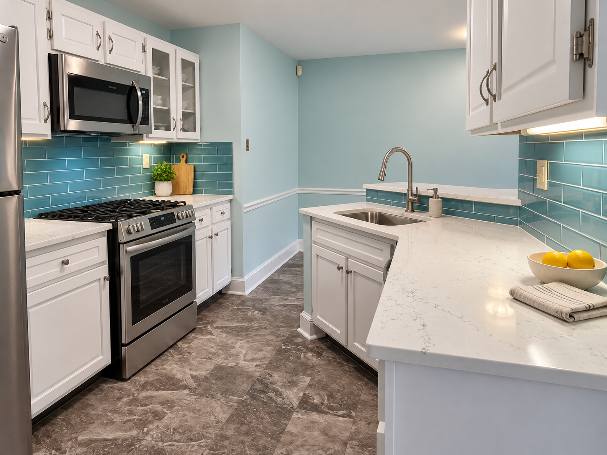
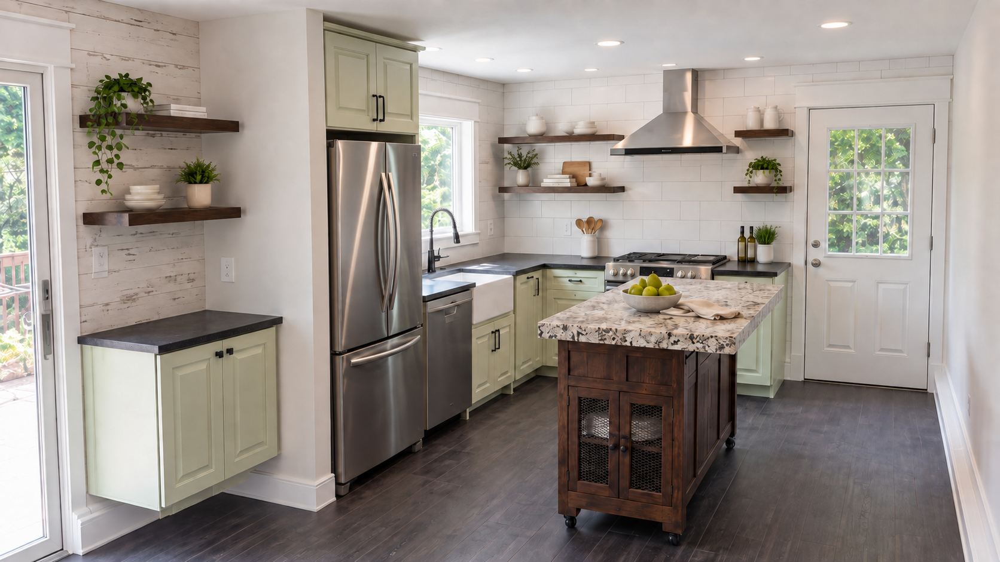
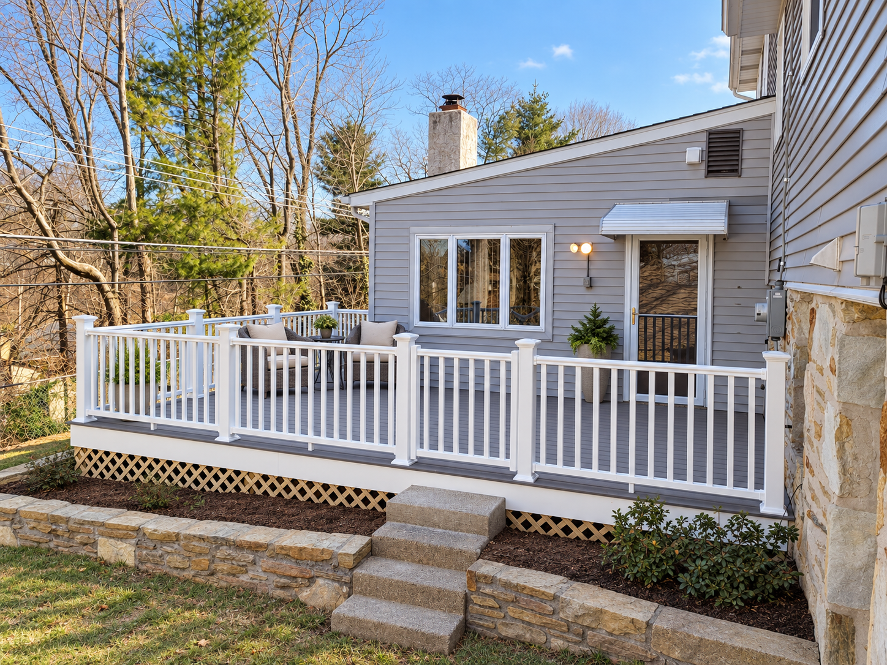
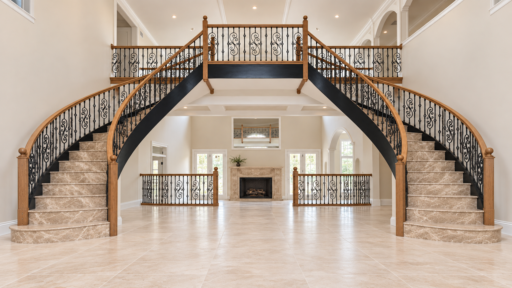
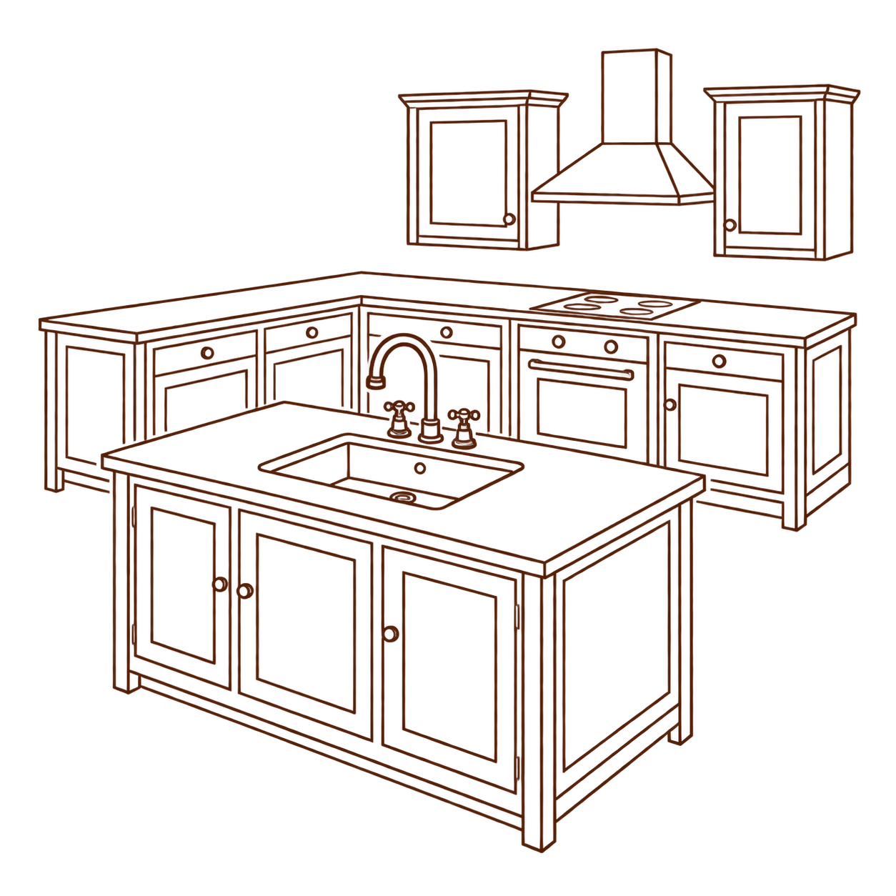
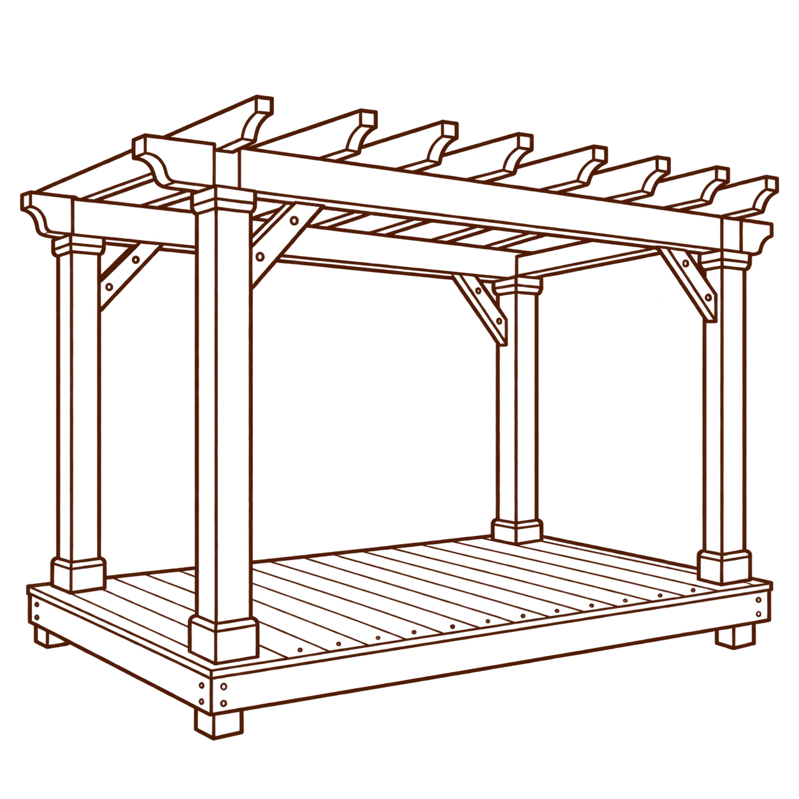
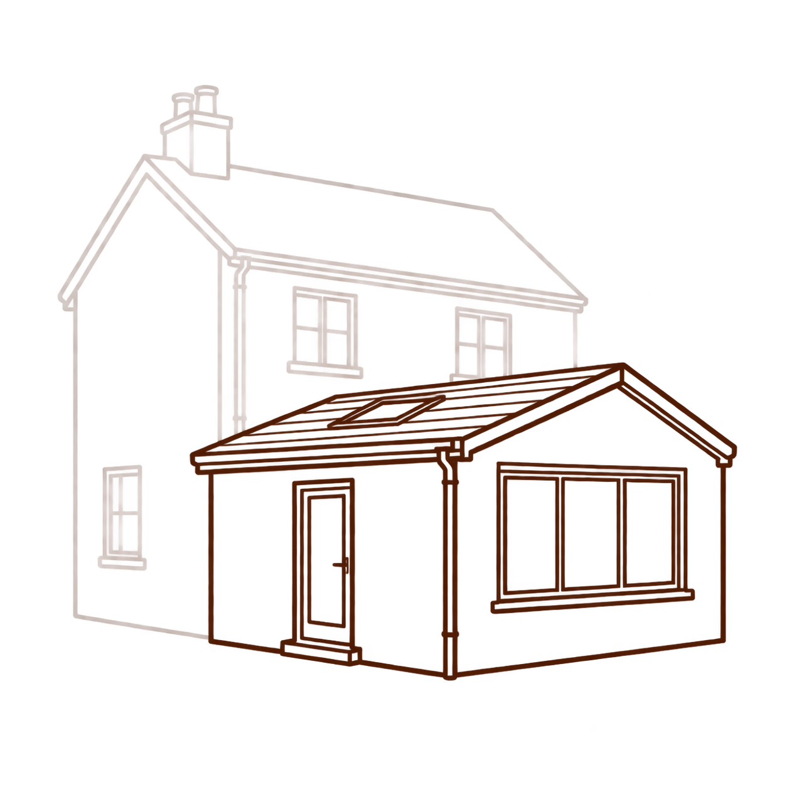
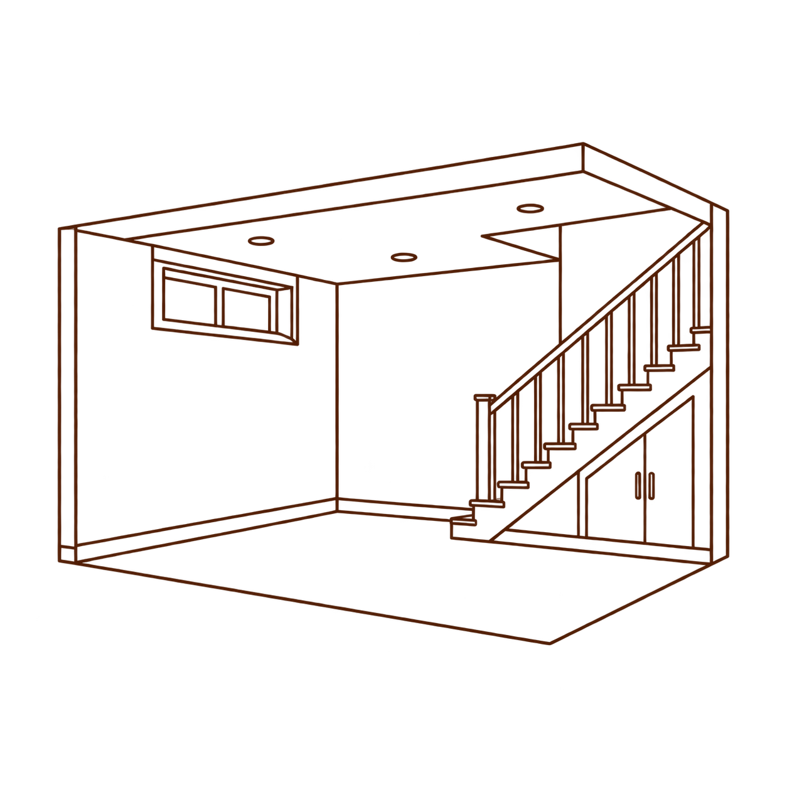
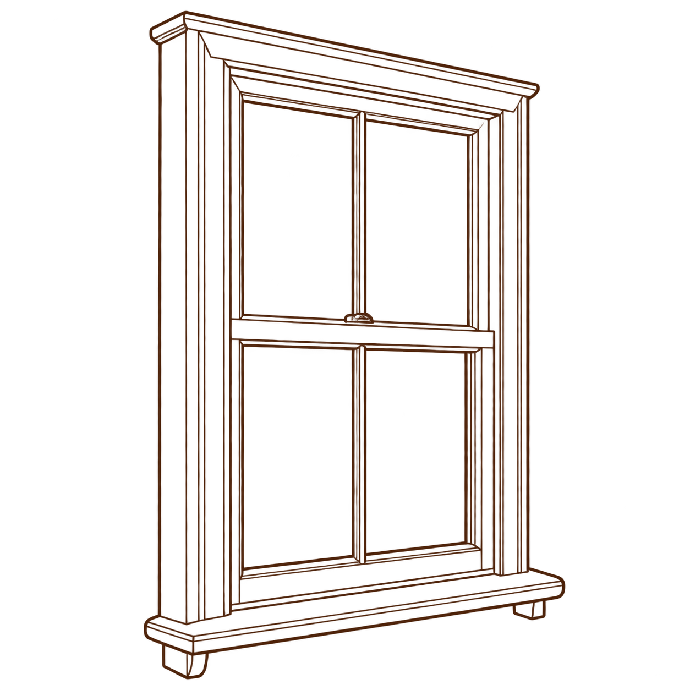
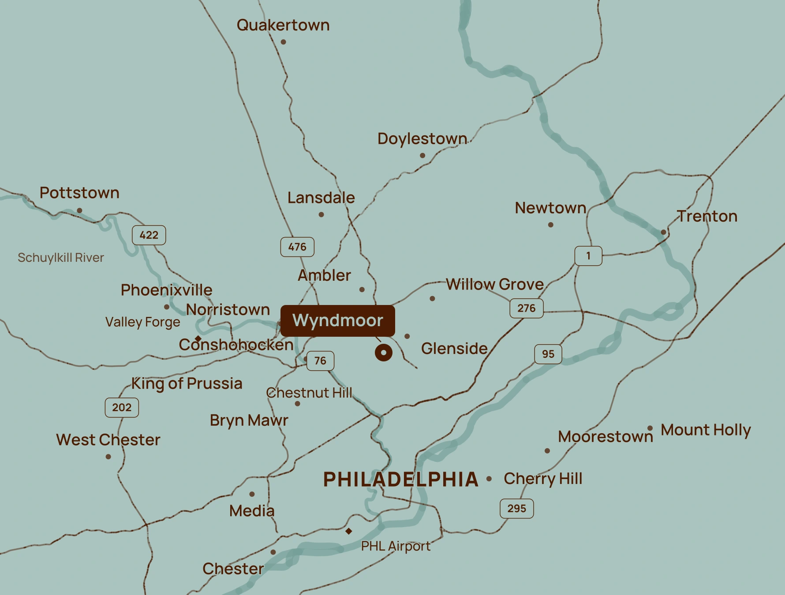

Built with care.
Finished with pride.
Expert carpentry and construction serving Wyndmoor, Glenside and the Philadelphia suburbs.
The difference
is in the details.
With over 20 years of craftsmanship behind us, we bring care and precision to every project, big or small.

Outdoor spaces made for unwinding.

Custom carpentry, crafted to belong.
Make more of
the home you love.
Helping you rejuvenate your home and create spaces you’re proud to live in.

Kitchen & bath remodeling
We remodel kitchens and bathrooms around the way you live, bringing together practical layouts, carefully fitted cabinetry and a finish you’ll enjoy every day. From a thoughtful update to a full renovation, we take care of the details.

Deck & outdoor spaces
We build pergolas, outhouses and decks that make more of your outdoor space, with room to gather, relax and enjoy your garden. Every detail is considered to suit your property and how you want to use it.

Home additions
We help you create the extra space you need while keeping the character of the home you love. From a larger living area to room for a growing family, we build additions that fit comfortably with what’s already there.
Custom carpentry
We create fitted storage, bespoke woodwork and timber structures shaped around your home. Whether it’s a practical built-in or a distinctive finishing detail, every piece is made with care and precision.

Basement finishing
We turn underused basements into comfortable spaces that earn their place in your home. Whether you’re planning a family room, a home office or somewhere for guests, we’ll help make it work for you.

Windows & doors
We fit and replace windows and doors with careful attention to how they look, feel and function. From a welcoming entrance to the finishing touches inside, we make sure they sit neatly within the character of your home.
“We treat your home as if it were our own, keeping disruption to a minimum and staying in close communication throughout. We want to help create the space you’ve always dreamed of, and we won’t call the job finished until it meets our own high standards.”
Originally from Oxford, England, Shannon Pearson honed his craft through a rigorous apprenticeship, gaining experience in everything from home renovations to bespoke timber-frame buildings and new build houses. After moving to Pennsylvania in 2017, he brought those traditional skills and values to serve the community around his new home.
Shannon’s customers value his craftsmanship, clear communication and honest approach, along with the care he puts into every stage of a project. From the first conversation to the smallest finishing touches, his aim is simple: to create a home that works for you, with work he’s proud to put his name to.
Tell us what you have in mindGreat projects start with good communication.
A clear path from your first ideas
to the final walkthrough.
Let’s talk
Tell us about your home, your plans and what you’d like to change. We’ll visit site and thoroughly understand the project requirements.
Make a plan
We’ll design and scope the work, give you a transparent estimate and schedule, and make sure the plan works for you.
Bring it to life
We’ll bring your plans to life with careful craftsmanship, keeping disruption to a minimum and staying in close communication throughout.
Handover
We’ll walk through the finished work with you, check every detail and take care of the finishing touches before handing it over.
Local craft.
Built to last.
From our base in Wyndmoor, we serve homeowners within roughly a 30-mile radius, including Glenside, Ambler, Willow Grove, Lansdale, Doylestown and Quakertown, as well as Chestnut Hill and the surrounding Philadelphia suburbs.

Frequently asked
questions.
Have another question?
Give us a call.
What kind of projects do you take on?
We help with projects big and small, from window and door replacements to home additions and major remodeling. Our experience covers kitchen and bathroom renovations, decks, outhouses, pergolas, and custom carpentry and joinery.
Send us a quick message using the form below with a few details about your project, and we’ll let you know how we can help.
What should I include in my enquiry?
Your town or ZIP code, the kind of work you’re considering and a short description are a useful start. If you have a preferred timeframe, include that too.
Can I get in touch while I’m still exploring ideas?
Absolutely—in many cases, the sooner we’re involved, the better. We can advise on finishes, fixtures and fittings, suppliers and the practical details that shape a successful project.
Our customers value that input during the early planning and design stages, when thoughtful decisions can help avoid costly mistakes and keep the work running smoothly.
Do you offer free estimates?
Yes, every estimate is free and comes with no obligation. We’ll visit your property, take the time to understand the project and listen to your goals, then provide a clear, honest quote.
What do you
have in mind?
Tell us about your project, and we’ll take it from there.
Whether it’s a new kitchen, space for a growing family or a detail you’ve been dreaming about, we’d love to help.